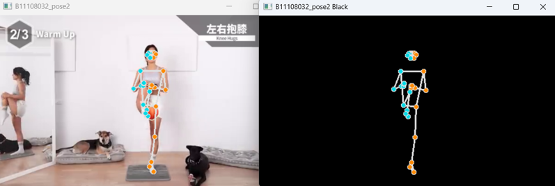

😊 臉部座標偵測
偵測眼睛、鼻子、嘴角等關鍵部位，呈現五官座標

🧍♂️ 人體骨架偵測
使用 Pose 模組追蹤身體動作，描繪骨架關節結構

🙌 姿勢角度量測
偵測雙手彎曲程度、計算肢體角度變化，進行動作分析

不僅能顯示骨架，還能偵測手部動作並分析動作角度與變化幅度。
💻 程式碼展示
▶️ 臉部座標偵測（臉部地標）
import cv2
import mediapipe as mp
import numpy as np
mp_face_detection = mp.solutions.face_detection
mp_drawing = mp.solutions.drawing_utils
face_detection = mp_face_detection.FaceDetection(model_selection=0, min_detection_confidence=0.5)
cap = cv2.VideoCapture(0)
while cap.isOpened():
success, image = cap.read()
imgrgb = cv2.cvtColor(image, cv2.COLOR_BGR2RGB)
results = face_detection.process(imgrgb)
w, h = (image.shape[1], image.shape[0])
if results.detections:
for detection in results.detections:
mp_drawing.draw_detection(image, detection)
s = detection.location_data.relative_bounding_box
eye = int(s.width * w * 0.1)
nose = int(s.width * w * 0.4)
a = detection.location_data.relative_keypoints[0]
b = detection.location_data.relative_keypoints[1]
n = detection.location_data.relative_keypoints[2]
m = detection.location_data.relative_keypoints[3]
c = detection.location_data.relative_keypoints[4]
d = detection.location_data.relative_keypoints[5]
ax, ay = int(a.x * w), int(a.y * h)
bx, by = int(b.x * w), int(b.y * h)
nx, ny = int(n.x * w), int(n.y * h)
mx, my = int(m.x * w), int(m.y * h)
cx, cy = int(c.x * w), int(c.y * h)
dx, dy = int(d.x * w), int(d.y * h)
cv2.circle(image, (ax, ay), (eye + 10), (255, 255, 255), -1)
cv2.circle(image, (bx, by), (eye + 10), (255, 255, 0), -1)
cv2.circle(image, (ax, ay), eye, (0, 0, 0), -1)
cv2.circle(image, (bx, by), eye, (0, 0, 0), -1)
cv2.rectangle(image, (nx, ny), (nx - 10, ny + 10), (0, 200, 0), 10)
cv2.rectangle(image, (mx, my), (mx - 10, my + 10), (255, 200, 200), 10)
cv2.rectangle(image, (cx, cy), (cx - 30, cy + 10), (200, 200, 0), -1)
cv2.rectangle(image, (dx, dy), (dx - 30, dy + 10), (200, 200, 200), -1)
cv2.imshow('B11108032', image)
if cv2.waitKey(5) & 0xFF == 27:
break
cap.release()
cv2.destroyAllWindows()▶️ 人體骨架偵測（姿勢追蹤）
import cv2
import mediapipe as mp
import numpy as np
conn = mp.solutions.pose.POSE_CONNECTIONS
pose = mp.solutions.pose.Pose(min_detection_confidence=0.5, min_tracking_confidence=0.5)
mpd = mp.solutions.drawing_utils
spec = mp.solutions.drawing_styles.get_default_pose_landmarks_style()
cap = cv2.VideoCapture('video/pose003.mp4')
while cap.isOpened():
success, image = cap.read()
imgrgb = cv2.cvtColor(image, cv2.COLOR_BGR2RGB)
bkb = np.zeros(image.shape, dtype=np.uint8)
results = pose.process(imgrgb)
if results.pose_landmarks:
mpd.draw_landmarks(image, results.pose_landmarks, conn, spec)
mpd.draw_landmarks(bkb, results.pose_landmarks, conn, spec)
cv2.imshow('B11108032_pose2', image)
cv2.imshow('B11108032_pose2 Black', bkb)
if cv2.waitKey(5) & 0xFF == 27:
break
cap.release()▶️ 人體姿勢角度偵測（手肘彎曲與百分比顯示）
import cv2
import mediapipe as mp
import numpy as np
import math
pose = mp.solutions.pose.Pose()
conn = mp.solutions.pose.POSE_CONNECTIONS
mpd = mp.solutions.drawing_utils
spec = mp.solutions.drawing_styles.get_default_pose_landmarks_style()
switch, count, switch2, count2 = 0, 0, 0, 0
color = (0, 0, 255)
color2 = (255, 0, 0)
cap = cv2.VideoCapture(0)
while cap.isOpened():
success, image = cap.read()
imgrgb = cv2.cvtColor(image, cv2.COLOR_BGR2RGB)
results = pose.process(imgrgb)
h, w, c = image.shape
xx1 = int(w * 0.1)
xx2 = int(w * 0.8)
poslist = []
if results.pose_landmarks:
mpd.draw_landmarks(image, results.pose_landmarks, conn, spec)
for id, lm in enumerate(results.pose_landmarks.landmark):
cx, cy = int(lm.x * w), int(lm.y * h)
poslist.append([id, cx, cy])
try:
x1, y1 = poslist[12][1], poslist[12][2]
x2, y2 = poslist[14][1], poslist[14][2]
x3, y3 = poslist[16][1], poslist[16][2]
right_angle = abs(int(math.degrees(math.atan2(y1 - y2, x1 - x2) - math.atan2(y3 - y2, x3 - x2))))
x4, y4 = poslist[11][1], poslist[11][2]
x5, y5 = poslist[13][1], poslist[13][2]
x6, y6 = poslist[15][1], poslist[15][2]
left_angle = abs(int(math.degrees(math.atan2(y4 - y5, x4 - x5) - math.atan2(y6 - y5, x6 - x5))))
right_per = np.interp(right_angle, (30, 170), (100, 0))
right_bar = int(np.interp(right_angle, (30, 170), (200, 400)))
left_per = np.interp(left_angle, (30, 170), (100, 0))
left_bar = int(np.interp(left_angle, (30, 170), (200, 400)))
cv2.rectangle(image, (xx1, int(right_bar)), (xx1 + 30, 400), color, cv2.FILLED)
cv2.putText(image, str(int(right_per)) + '%', (xx1 - 10, 450), cv2.FONT_HERSHEY_SIMPLEX, 1, color, 2)
cv2.rectangle(image, (xx2, int(left_bar)), (xx2 + 30, 400), color2, cv2.FILLED)
cv2.putText(image, str(int(left_per)) + '%', (xx2 - 10, 450), cv2.FONT_HERSHEY_SIMPLEX, 1, color2, 2)
if right_per >= 95:
color = (0, 255, 0)
if switch == 0:
count += 0.5
switch = 1
if right_per <= 5:
color = (0, 255, 0)
if switch == 1:
count += 0.5
switch = 0
if left_per >= 95:
color2 = (0, 255, 0)
if switch2 == 0:
count2 += 0.5
switch2 = 1
if left_per <= 5:
color2 = (0, 255, 0)
if switch2 == 1:
count2 += 0.5
switch2 = 0
except:
pass
cv2.putText(image, str(count), (xx1 - 40, 100), cv2.FONT_HERSHEY_SIMPLEX, 2, (0, 0, 255), 6)
cv2.putText(image, str(int(count2)), (xx2 - 40, 100), cv2.FONT_HERSHEY_SIMPLEX, 2, (255, 0, 0), 6)
cv2.imshow('B11108032_pose3', image)
if cv2.waitKey(5) & 0xFF == 27:
break
cap.release()
cv2.destroyAllWindows()